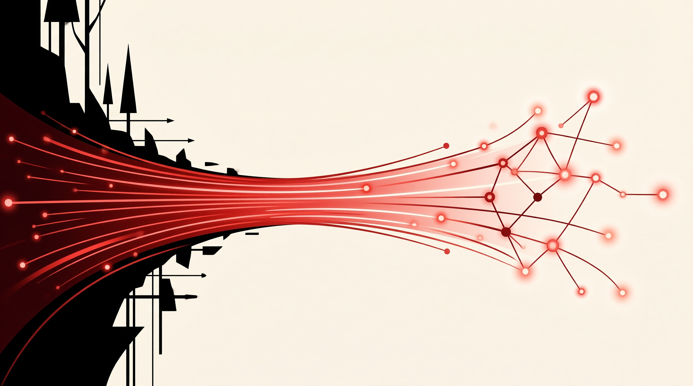

当我们超越悲剧诊断转向治理实验，会发现人类协作史本质上是一部制度创新史——从牧场到代码仓库，从水资源到知识 commons，可持续共享不是乌托邦想象，而是需要精心设计、持续演进的实践艺术。
从哈丁的诊断出发，人类并未止步于宿命论——相反，正是悲剧的揭示激发了多元治理创新的长期可能性，催生了社区规范、集体行动与协作契约的持续演化。
开源社区以代码为媒介，构建了一套可复制、可验证、可扩展的共享治理方案——它证明，当规则设计得当、激励结构清晰，大规模陌生人协作不仅可行，且持续繁荣。
不存在放之四海皆准的固定公式。每一种公地都有其独特的生态约束与社群基因，治理的真正艺术在于持续观察、迭代与本地化适应，而非简单移植。
